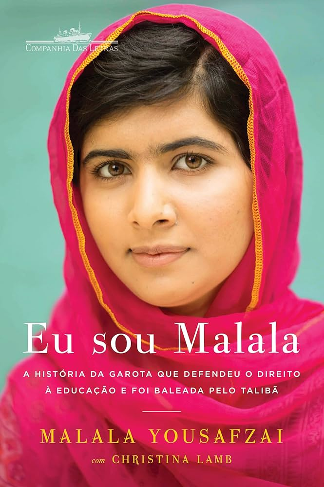
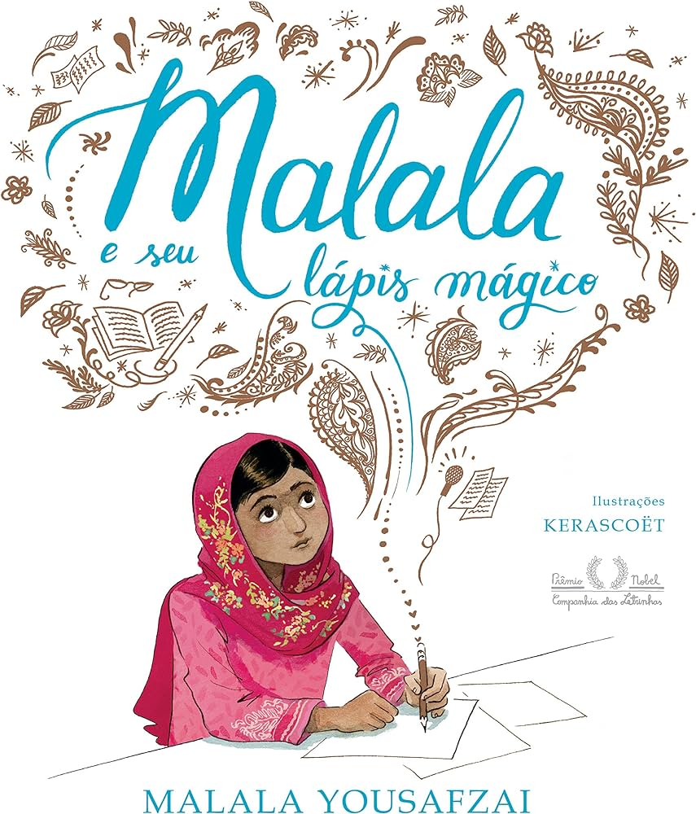
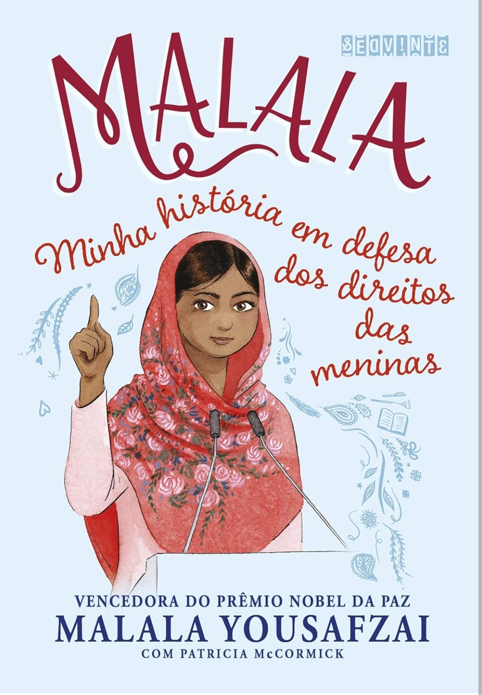
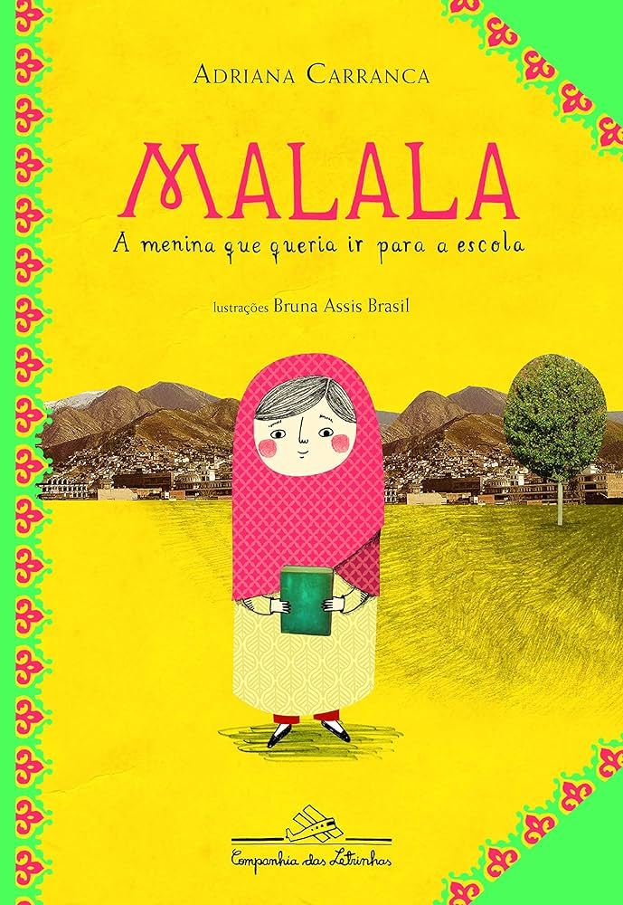
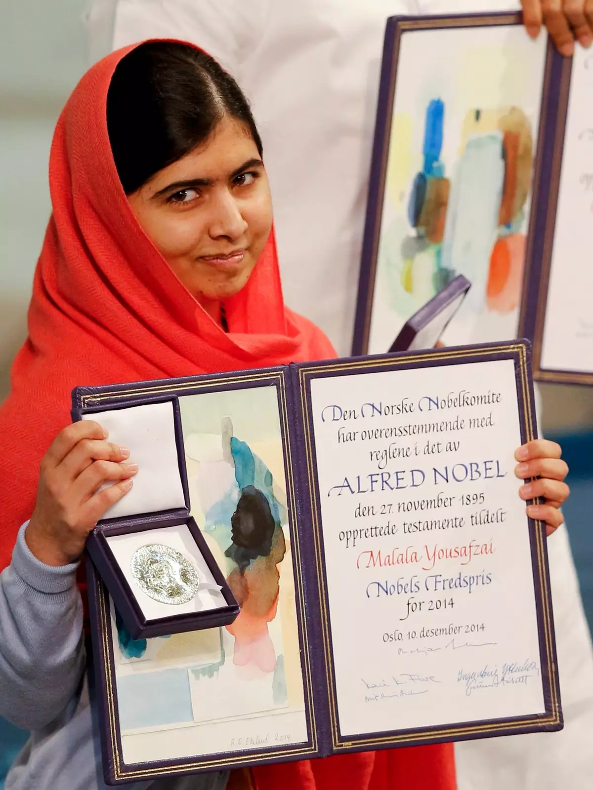

| Livros Malala Yousafzai | ||
| Eu sou Malala: | ||
|  | Co-escrito com a jornalista Christina Lamb, este livro é uma autobiografia detalhada de Malala Yousafzai. Ele narra sua vida no vale do Swat, no Paquistão, a luta de sua família pelo direito à educação, o atentado que quase a matou e sua recuperação. O livro se tornou um best-seller internacional e foi traduzido para diversas línguas, levando a história inspiradora de Malala a milhões de leitores ao redor do mundo. | |
| Lápis Mágico de Malala: | ||
| Este livro infantil é baseado em uma história real da vida de Malala. Nele, ela descreve seu desejo de ter um lápis mágico que pudesse usar para desenhar um mundo melhor e resolver problemas. A obra é uma mensagem inspiradora para crianças sobre a importância da educação e a força dos sonhos. Em 2021, ela lançou "Nós Somos Deslocados: Meu Percurso e Histórias de Meninas Refugiadas no Mundo", um livro que destaca as histórias de meninas refugiadas que foram forçadas a deixar suas casas devido a conflitos. |  | |
| Malala: Minha História em Defesa dos Direitos das Meninas: | ||
|  | Este livro é uma versão jovem adulta da autobiografia "Eu Sou Malala". Ele é adaptado para leitores mais jovens e oferece uma visão acessível da vida e da luta de Malala. O livro é uma excelente introdução à sua história para adolescentes e jovens adultos. | |
| Malala, a menina que queria ir para a escola | ||
| Escrito por Adriana Carranca, este livro é voltado para o público infantojuvenil e narra a história de Malala de uma forma que as crianças podem entender. A autora visitou o vale do Swat e reuniu relatos para contar a trajetória de Malala de maneira envolvente e educativa. |  | |
| Prêmios Malala Yousafzai | |||
 |
 | ||
| Prêmio Sakharov | Malala, prêmio Nobel da Paz | ||
| Em 2013, ela recebeu o Prêmio Sakharov para a Liberdade de Pensamento, concedido pelo Parlamento Europeu, que reconhece indivíduos e grupos que dedicam suas vidas à defesa dos direitos humanos e da liberdade de pensamento. No mesmo ano, Malala foi agraciada com o Prêmio Internacional da Criança da Paz, outorgado pela Fundação KidsRights, em reconhecimento ao seu trabalho incansável em prol da educação infantil. | Em 2014, Malala recebeu o Prêmio Nobel da Paz, tornando-se a pessoa mais jovem a ser laureada com essa honra. O prêmio foi um reconhecimento de sua luta incansável pelos direitos das crianças e pela educação das meninas. Malala dividiu o prêmio com Kailash Satyarthi, um ativista indiano que luta contra o trabalho infantil, simbolizando a união de esforços em prol dos direitos das crianças em todo o mundo. |